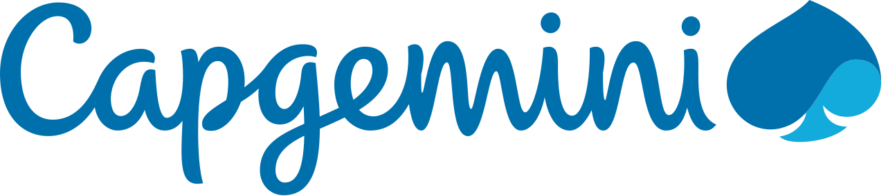
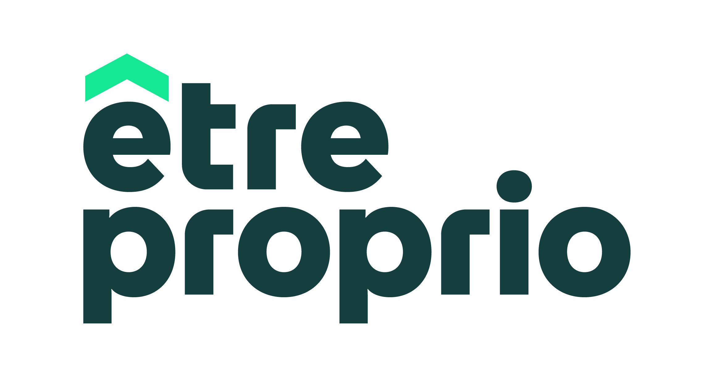
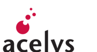
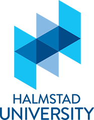
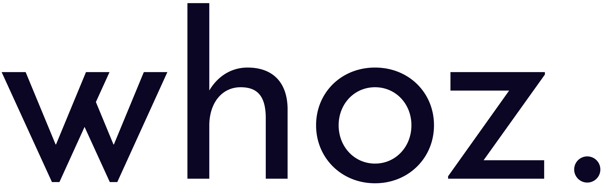
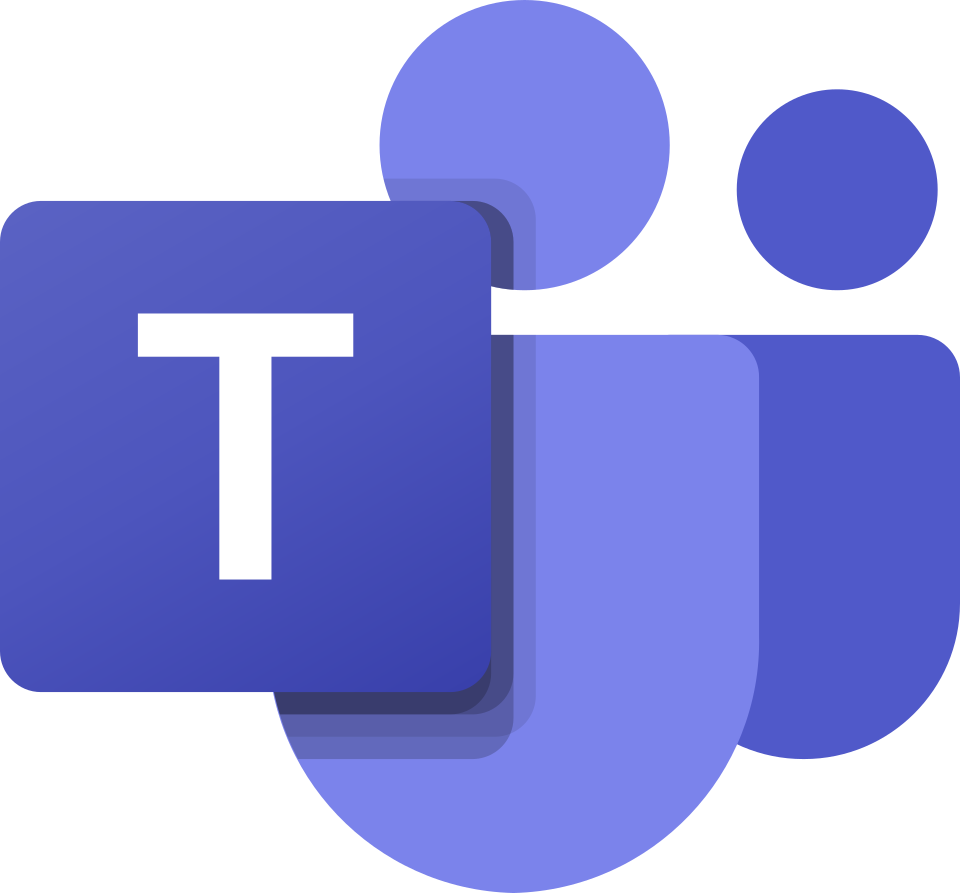
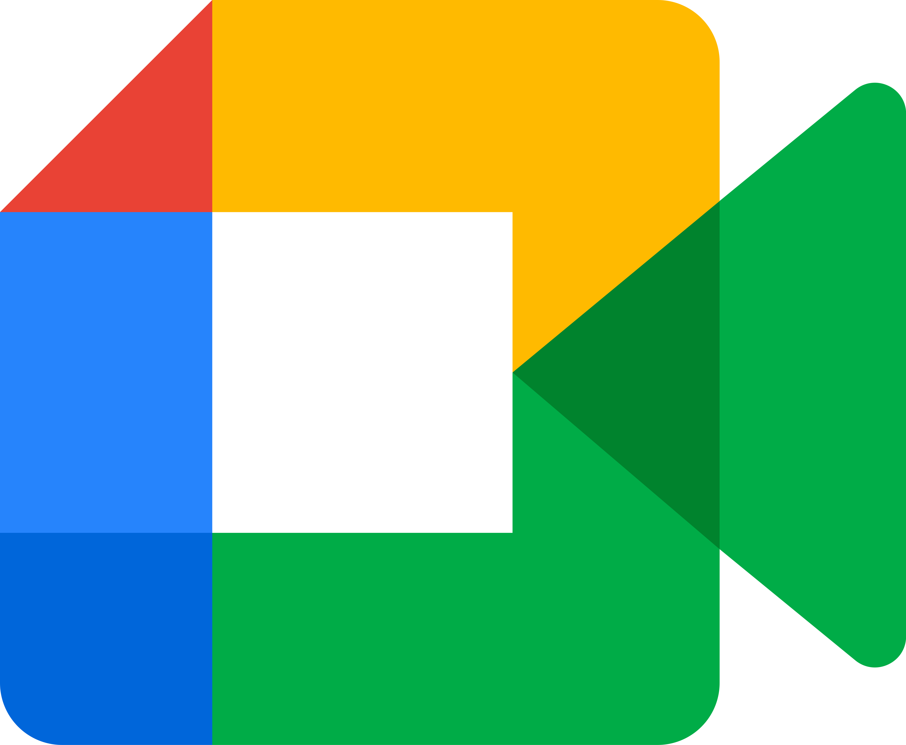

de CA genere en co-gestion la premiere annee sur le compte Thales Alenia Space.
Corentin Webber
Business Development Manager en environnement Ingenierie & IT
Business Developer bilingue franco-anglais specialise dans la vente de prestations d'ingenierie et IT. Actuellement chez Capgemini Engineering, je developpe des comptes dans l'ecosysteme aeronautique, space et defense, de la prospection au placement de consultants.
Toulouse, France
Entreprises avec lesquelles j'ai travaille



Chiffres cles
Des resultats concrets sur le terrain.
de CA genere en solo sur 7 mois les comptes de la diversification spatiale.
comptes clients geres sur la diversification spatiale (Start-up ; PME ; ETI).
nouveaux comptes ouverts sur la partie diversification spatiale.
plus de 22 chez Thales Alenia Space et plus de 11 en solo sur la diversification spatiale.
contrats signes chez EtreProprio, avec plus de 8 000 appels emis en prospection B2B.
Experiences professionnelles
Un parcours commercial construit par etapes, du terrain a la gestion de comptes.
Chez Capgemini Engineering, j'evolue au sein d'un environnement exigeant, a l'intersection du developpement commercial, de l'ingenierie et des technologies. Mon role consiste a developper l'activite sur des comptes strategiques de l'ecosysteme aeronautique, spatial et para-spatial, en intervenant sur l'ensemble du cycle commercial : prospection, qualification des besoins, rendez-vous clients, suivi des opportunites et contribution au staffing de consultants.
Cette experience m'a permis de travailler sur des sujets a forte valeur ajoutee, en lien avec des besoins en ingenierie, electronique, software, systemes critiques et digital. Au-dela de la prospection et de la gestion de portefeuille, j'y developpe une vision plus globale de l'activite : comprehension des enjeux clients, construction du pipeline, suivi des KPIs commerciaux et accompagnement de la croissance business.
Sur cette mission, j'ai contribue a la gestion d'un portefeuille de 11 comptes clients, a l'ouverture et au developpement de 5 nouveaux comptes, a un pipeline commercial superieur a 3,5M €, ainsi qu'a plus de 31 ETP. J'ai egalement maintenu une moyenne d'environ 10 rendez-vous qualifies par semaine.
Cette experience renforce mon objectif d'evoluer vers un poste de Business Manager, ou je pourrai combiner developpement commercial, gestion d'activite et management d'equipes.
Chez EtreProprio, j'ai evolue dans un environnement commercial rythme, fortement oriente prospection et acquisition. Mon role consistait a contacter des prospects, qualifier leurs besoins, presenter l'offre et les accompagner jusqu'a la signature. Cette experience m'a permis de renforcer mes reflexes commerciaux sur des cycles courts, avec un fort niveau d'intensite et une culture du resultat tres presente.
Au quotidien, j'ai mene une prospection telephonique intensive, identifie les besoins clients et conduit les echanges jusqu'a la negociation et a la conclusion des contrats. Cette experience m'a appris a etre percutant dans la prise de contact, rigoureux dans la qualification et constant dans l'effort commercial.
Sur cette periode, j'ai emis plus de 8 000 appels, contribue a la signature de plus de 600 contrats en 4 mois, et atteint un taux de conversion de 7,5 %, au-dessus de l'objectif fixe a 5 %.
Chez Acelys Services Numeriques, j'ai participe a une mission a la croisee de l'analyse de marche et du developpement commercial, avec un focus sur les opportunites business en cybersecurite. Cette experience m'a permis de decouvrir une approche plus strategique du commerce, en amont de l'action terrain, a travers l'etude du marche, le benchmark concurrentiel et la reflexion sur le positionnement de l'entreprise.
J'ai travaille sur l'identification de relais de croissance, l'analyse des acteurs presents sur le marche et la contribution a l'elaboration d'un plan d'action commercial. J'ai aussi collabore de maniere transverse avec les equipes commerciales et RH, ce qui m'a donne une vision plus globale du developpement d'activite dans une ESN.
Cette mission a abouti a l'identification de deux segments prioritaires representant environ 900 k€ de potentiel, ce qui m'a permis de mieux comprendre comment structurer une approche commerciale a partir d'une lecture marche et d'enjeux de positionnement.
Chez Go Sport, j'ai occupe un poste de conseiller de vente dans un environnement retail dynamique, au contact direct des clients. Cette experience m'a permis de developper des bases solides en relation client, en ecoute active et en vente, tout en comprenant l'importance de l'experience en magasin dans le parcours d'achat.
Au quotidien, j'accompagnais les clients dans leurs choix, participais a la mise en valeur des produits et contribuais a la fidelisation a travers un conseil adapte a leurs besoins. Cette experience m'a appris a creer rapidement un lien de confiance, a comprendre les attentes d'un client et a valoriser une offre de maniere concrete.
Encadrement d'enfants de 4 a 10 ans dans le cadre d'activites sportives et educatives, avec developpement du sens des responsabilites, de la pedagogie et de l'accompagnement.
Competences
Les blocs de competences qui structurent mon profil.
Pilotage commercial
Suivi des KPI, reporting CRM, animation du pipeline, revues d'activite et analyse de performance.
Developpement B2B
Prospection ciblee, qualification, rendez-vous, negociation, construction d'offres et closing.
Grands comptes
Dialogue avec managers, directions, achats et responsables techniques dans des cycles complexes.
Management & staffing
Recrutement, onboarding, coordination interne, suivi individualise et accompagnement des consultants.
Formation
Une base academique business, internationale et professionnalisante.
Montpellier Business School
Programme Grande Ecole - Master, en parallele de mon alternance chez Capgemini Engineering.
TBS Education - Toulouse
Bachelor Management en English Track.

Halmstad University - Suede
Semestre d'echange academique Erasmus.
Langues & outils
Les environnements dans lesquels je travaille.
Langues
Francais
Langue maternelle
Anglais
Langue maternelle
Allemand
Intermediaire
Outils








Ce qui m'anime
Continuer a evoluer dans un environnement B2B exigeant.
Je souhaite construire la suite de mon parcours autour du developpement commercial, de la relation grands comptes et du pilotage de performance. Ce qui m'interesse : ouvrir des portes, comprendre les enjeux clients, coordonner les bonnes ressources et faire progresser une activite avec methode.
Passions / centres d'interet
Des reperes personnels qui disent aussi ma facon d'avancer.
Course a pied
Marathon en 3h15 : discipline, regularite et gestion de l'effort.
Tennis
Classe 15/2, avec le gout du duel, de la progression et de la precision.
Voyages, ski et culture internationale
Curiosite pour les environnements multiculturels et les experiences qui font bouger les perspectives.
Contact final
Un point d'entree simple pour echanger.
Pour discuter de mon parcours, de mes experiences ou d'une opportunite professionnelle, le plus direct reste de me contacter par email.